The oldest rigging exercise there is: a ball that rolls along the ground without sliding. It is small enough to build in one sitting and it uses most of what UsdRig is — a control hierarchy, an FK solver, joints, a weight object and a mover — plus one thing that is easy to get wrong and worth getting right, which is making the spin follow the travel so there is only one channel to animate.
This page builds it live in usdview, through the usdNoodles node
graph editor, and shows every step as a recording of the real
application. The finished stage is
docs/examples/tutorial_rolling_ball.usda
and every snippet below is a literal excerpt of it.
What you start with ¶
The geometry, and a rig root with nothing in it. Open
docs/examples/tutorial_rolling_ball.usda and delete everything under
/BallAsset/Rig's five scopes to get back to this, or point the same
steps at a stage of your own — the pieces are:
/BallAsset/Geom/Ball— a 32 × 16 lat/long sphere of radius 1, centred at(0, 1, 0)so it sits ON the ground and the contact point is the origin. It carriesprimvars:stand aUsdPreviewSurfacereadingtextures/pixar_ball.png: yellow, one broad blue band, one red star. The graphic is not decoration — an untextured sphere spinning about its own centre looks perfectly still, and you cannot see whether a rolling rig is rolling or sliding./BallAsset/Geom/Ground— a checkered plane./BallAsset/Rig— a Rig Root with emptyControls,Joints,Solvers,WeightsandMoversscopes./BallAsset/MainCam— the camera the recordings use.
Open it with bin/launch_usdview.bat docs/examples/tutorial_rolling_ball.usda
(or bin/usdview.sh), then Window ▸ Noodles Editor. The editor opens
docked; it is scoped to the rig, so the graph starts on
/BallAsset/Rig rather than on the asset container.
Step 1 — point your edits at the file ¶
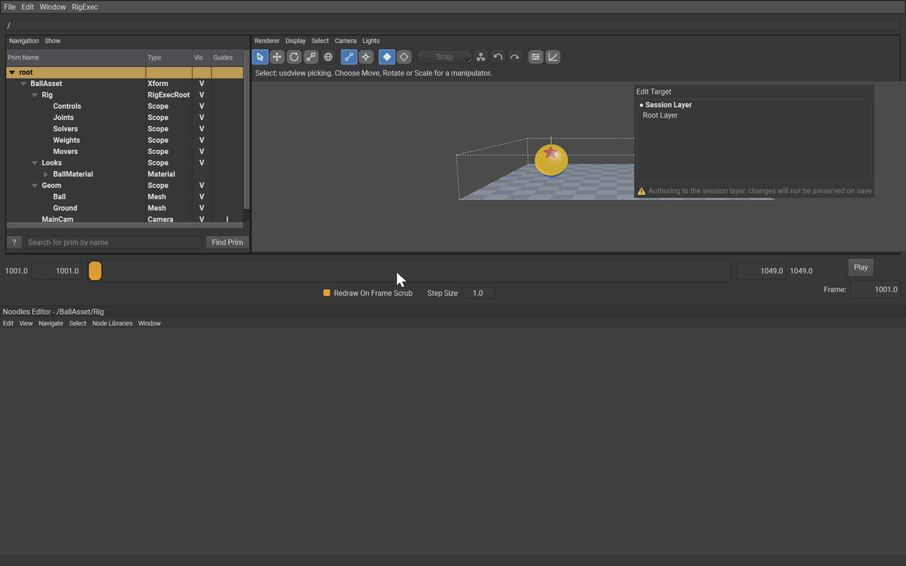
Do this first, every time. usdview opens with the session layer as the edit target, and the session layer is thrown away when the application closes. Everything you are about to build would go with it.
In the UI: Window ▸ Layer Editor opens the Noodles layer editor beside the graph. It lists the stage's layers with a ● on the current edit target, and a warning strip under them: "Authoring to the session layer, changes will not be preserved on save". Click the Root Layer row. The ● moves, the warning clears, and the graph's own banner goes with it.
From here on every prim, relationship and value lands in
tutorial_rolling_ball.usda, and Ctrl+S in the graph saves it.
Step 2 — put the stage in the graph ¶
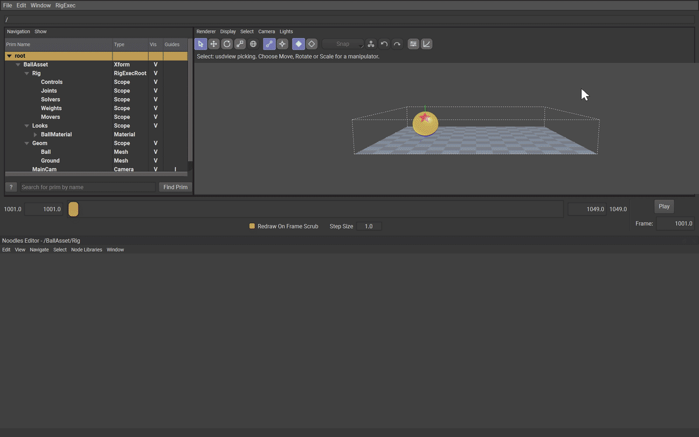
The editor draws the prims you ask it to. Select /BallAsset/Rig in
usdview's prim browser and press A over the graph canvas ("add from
prim tree"); do the same for Geom/Ball and Geom/Ground.
A mesh node arrives with a row per property — over a hundred of them for a sphere — so click the caret in its title bar to collapse it, then drag each node by its title into a tidy left-to-right layout. This is not housekeeping: relationships are authored by dragging from a pin onto a node, and a node under another node is a relationship pointed at the wrong prim.
Step 3 — the Move control ¶
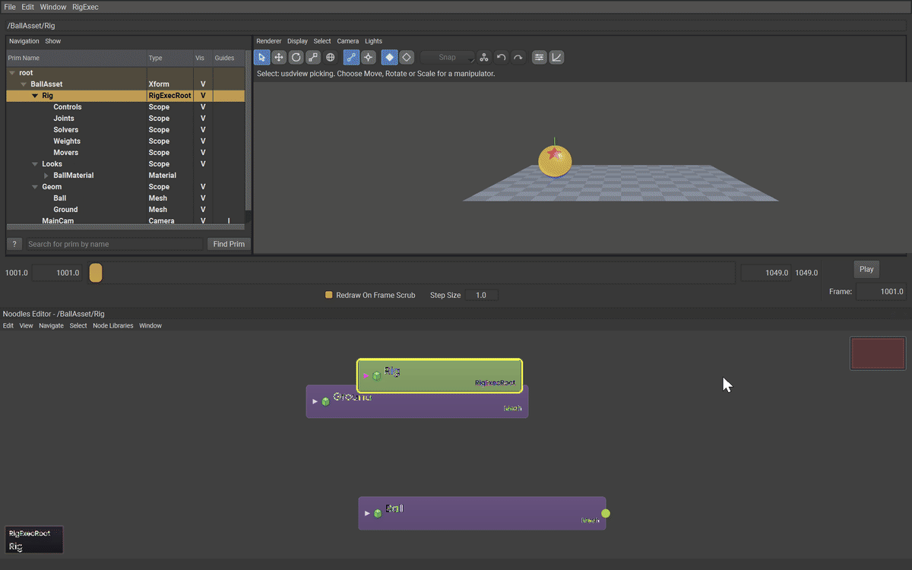
A Control is the animator-facing prim: an
animatable coordinate space whose animation is authored on its avars.
Move is the one that travels along the ground.
In the UI: select the Controls scope in the prim browser (that is
where the new prim goes), hover the graph, press Tab to open the node
creation hotbox, type RigExecControl, press Return. The prim is
created as RigExecControl1; double-click its title, clear it, type
Move, Return. Then, with the node still selected, press Tab
again and type RigExecControlAPI — the same hotbox lists every applied
API schema in the build beside the concrete prim types, and choosing one
applies it to the selection.
def RigExecControl "Move" (
prepend apiSchemas = ["RigExecControlAPI", "NodeGraphNodeAPI"]
)
{
double avars:tx = 0
double avars:tz = 0
matrix4d rest:space = ( (1, 0, 0, 0), (0, 1, 0, 0), (0, 0, 1, 0), (0, 0, 0, 1) )
}
Nothing else is authored. guide:shape, guide:drawMode,
guide:scaleX/Y/Z and guide:wireWidth all have schema fallbacks that
draw exactly the wire circle you want, and a rig should not carry an
opinion that says what the schema already says.
Step 4 — the Squash control ¶
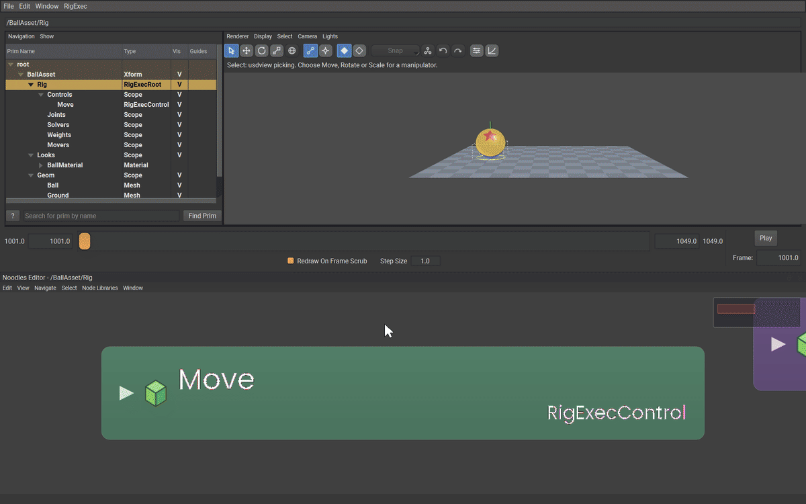
Same three actions, with Move selected so the new control lands
underneath it. Squash carries the scale avars.
def RigExecControl "Squash" (
prepend apiSchemas = ["RigExecControlAPI", "NodeGraphNodeAPI"]
)
{
double avars:sx = 1
double avars:sy = 1
double avars:sz = 1
matrix4d rest:space = ( (1, 0, 0, 0), (0, 1, 0, 0), (0, 0, 1, 0), (0, 0, 0, 1) )
}
Its rest space is the ground, not the ball's centre, and it sits above the roll in the hierarchy. Both of those are the whole trick of a squashing ball: scaling about the ground keeps the contact point on the ground, and squashing above the spin keeps the squash vertical while the ball turns inside it. Swap the two and the ball squashes sideways as it rolls.
Step 5 — the Roll and Spin controls ¶
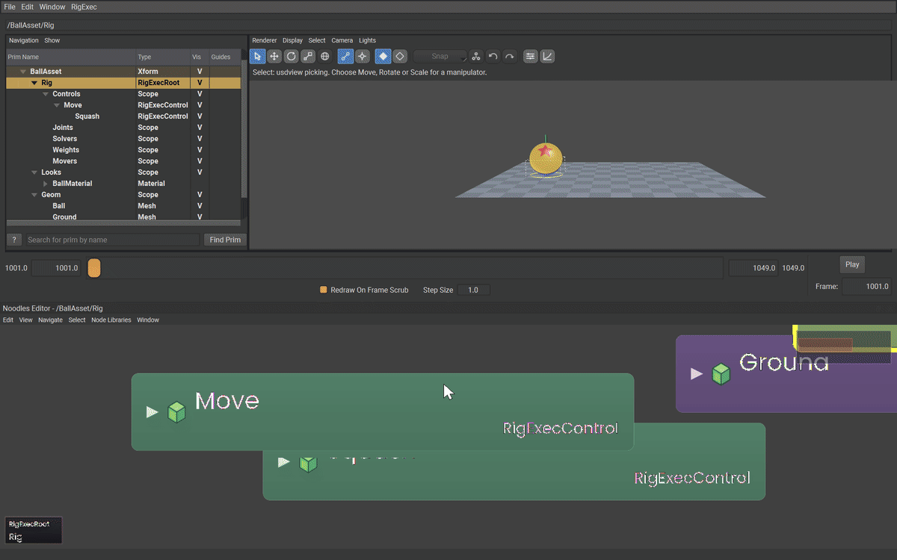
Roll is the control the rig drives for you; Spin is the one you can
still key by hand when a shot needs the ball to scuff or spin on the spot.
def RigExecControl "Roll" (
prepend apiSchemas = ["RigExecControlAPI", "NodeGraphNodeAPI"]
)
{
double avars:rz = -57.29578
matrix4d rest:space = ( (1, 0, 0, 0), (0, 1, 0, 0), (0, 0, 1, 0), (0, 1, 0, 1) )
def RigExecControl "Spin" (
prepend apiSchemas = ["RigExecControlAPI", "NodeGraphNodeAPI"]
)
{
double avars:rz = 0
matrix4d rest:space = ( (1, 0, 0, 0), (0, 1, 0, 0), (0, 0, 1, 0), (0, 0, 0, 1) )
}
}
Two values here are not cosmetic.
rest:space puts Roll at (0, 1, 0) — the ball's centre. A rotation
turns about its own frame's origin, and a roll about the ground would swing
the ball through the floor.
avars:rz = -57.29578 is not a pose; it is the gain, the degrees of
roll per unit of travel, and Step 9 multiplies it by the travel. It is an
avar, so the Avar Editor types it — and
Step 9 is where
this page sets it, next to the mover that reads it.
Step 6 — the joints ¶
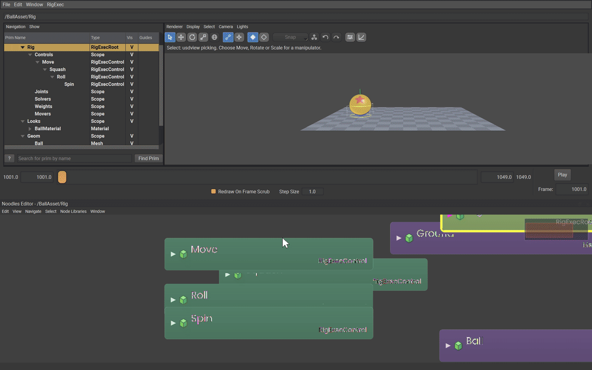
Controls are what an animator touches; Joints are
what a solver writes and a mover reads. This rig needs one per control, in
the same shape: Root ▸ Squash ▸ Roll ▸ Spin. Create them the same way —
Tab, RigExecJoint, Return, rename — with the parent joint
selected each time. No API schema: a joint needs none.
def RigExecJoint "Root"
{
matrix4d rest:space = ( (1, 0, 0, 0), (0, 1, 0, 0), (0, 0, 1, 0), (0, 0, 0, 1) )
def RigExecJoint "Squash"
{
matrix4d rest:space = ( (1, 0, 0, 0), (0, 1, 0, 0), (0, 0, 1, 0), (0, 0, 0, 1) )
def RigExecJoint "Roll"
{
matrix4d rest:space = ( (1, 0, 0, 0), (0, 1, 0, 0), (0, 0, 1, 0), (0, 1, 0, 1) )
def RigExecJoint "Spin"
{
matrix4d rest:space = ( (1, 0, 0, 0), (0, 1, 0, 0), (0, 0, 1, 0), (0, 0, 0, 1) )
}
}
}
}
Roll's bind frame is the ball's centre, for the same reason the
control's is: the mover divides the posed frame by the rest frame, and the
two have to agree about where the ball turns.
Step 7 — the FK chain ¶
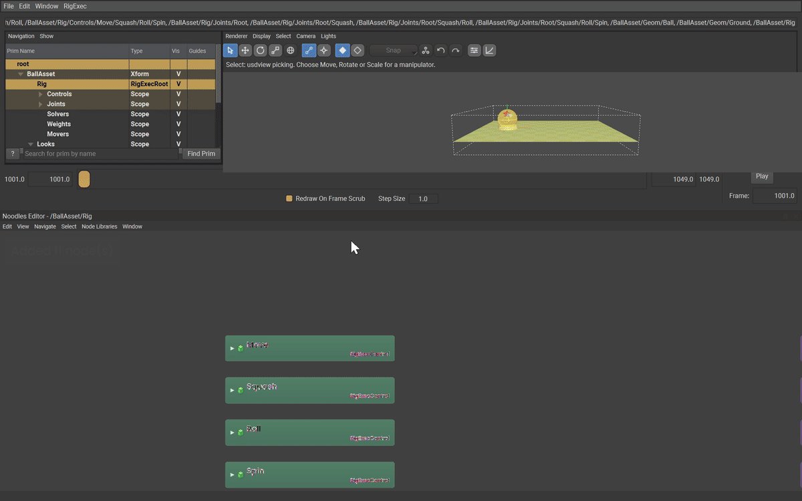
An FK Chain is the solver that maps controls onto joints, one to one, in order.
In the UI: select the Solvers scope, Tab, RigExecFkChain,
Return, rename to BallChain. The new node opens with its rows
showing: drag from its rigExec:controls pin onto each control node
in turn — Move,
Squash, Roll, Spin — and from rigExec:joints onto Root,
Squash, Roll, Spin. The order you drop them in is the order the
chain pairs them in.
def RigExecFkChain "BallChain"
{
rel rigExec:controls = [
</BallAsset/Rig/Controls/Move>,
</BallAsset/Rig/Controls/Move/Squash>,
</BallAsset/Rig/Controls/Move/Squash/Roll>,
</BallAsset/Rig/Controls/Move/Squash/Roll/Spin>,
]
uniform token rigExec:controlSpace = "parentRelative"
rel rigExec:joints = [
</BallAsset/Rig/Joints/Root>,
</BallAsset/Rig/Joints/Root/Squash>,
</BallAsset/Rig/Joints/Root/Squash/Roll>,
</BallAsset/Rig/Joints/Root/Squash/Roll/Spin>,
]
}
rigExec:controlSpace = "parentRelative" is required and is not the
fallback. The fallback is world, which reads each control's whole
world transform and applies it to the joint; with a nested control
hierarchy that composes every ancestor's motion twice and the ball leaves
the ground within a few frames. See
What no editor can author — this is one of
the five values you have to type.
Step 8 — the skin ¶
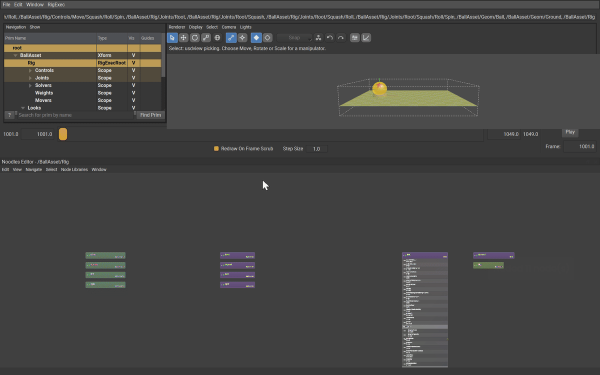
One Matrix Mover carries the whole ball from the last joint, under a Static Weight of 1.
In the UI: create RigExecStaticWeight under Weights and drag its
rigExec:weightTarget pin onto the points row of the Ball node —
a weight object is a field over a property's elements, not over a prim.
Create RigExecMatrixMover under Movers, apply RigExecMoverAPI from
the hotbox, then drag rigExec:moves onto Ball.points,
rigExec:transform onto the Spin joint and rigExec:weightObject onto
the weight.
def RigExecStaticWeight "BallWeight"
{
uniform float rigExec:defaultWeight = 1
rel rigExec:weightTarget = </BallAsset/Geom/Ball.points>
}
def RigExecMatrixMover "BallSkin" (
prepend apiSchemas = ["RigExecMoverAPI", "NodeGraphNodeAPI"]
)
{
rel rigExec:moves = </BallAsset/Geom/Ball.points>
rel rigExec:transform = </BallAsset/Rig/Joints/Root/Squash/Roll/Spin>
rel rigExec:weightObject = </BallAsset/Rig/Weights/BallWeight>
}
The weight's representation stays at its constant fallback and its
envelope is defaultWeight = 1: every point of the ball is carried
whole. A dense array of per-point weights is what you reach for when
part of a mesh follows a joint and part of it does not — here nothing
does.
Select Move, pick Move on the viewport toolbar (or press W) and
drag the red X handle. The ball follows the control. It also slides,
which is the problem the next step solves.
Step 9 — make the roll a consequence of the travel ¶
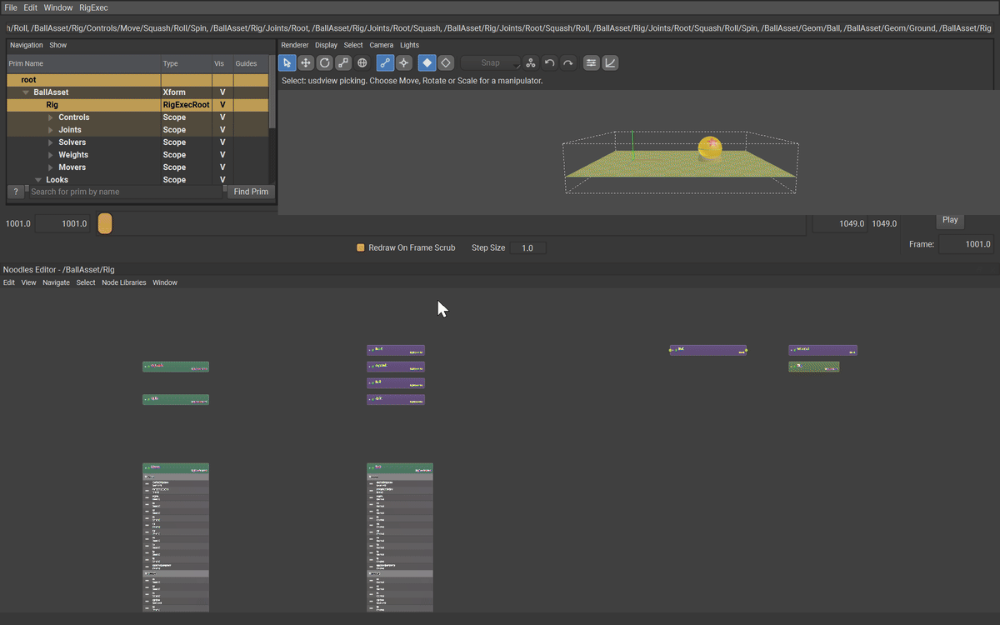
This is the step the whole tutorial is for.
A ball of radius r that rolls without slipping turns by the arc it covers: rolling forward a distance d turns it d / r radians. Travelling along +X turns it about −Z, so
rz(radians) = -tx / r
rz(degrees) = -tx * 180 / (pi * r)
= -57.29578 * tx for r = 1
One full turn is 360° and carries the ball 2 * pi * r = 6.2832 units.
Over the 8 units this shot travels the ball turns −458.37°, one and a
quarter revolutions.
You could key that by hand on Roll.avars:rz, and it would be wrong the
first time anyone changes the timing. Instead, derive it. A
Float Math Mover revises one exact float
property; its inputs:value accepts a connection, so it can read a
number from somewhere else on the stage. Point it at the travel, multiply,
and write the answer into the roll:
def RigExecFloatMathMover "RollFromTravelX" (
prepend apiSchemas = ["RigExecMoverAPI", "NodeGraphNodeAPI"]
)
{
float inputs:value = 0
float inputs:value.connect = </BallAsset/Rig/Controls/Move.avars:tx>
rel rigExec:moves = </BallAsset/Rig/Controls/Move/Squash/Roll.avars:rz>
uniform token rigExec:operation = "multiply"
}
multiply computes r = incoming * inputs:value, where incoming is the
target's own authored value — the −57.29578 gain from Step 5 — and
inputs:value is the travel arriving down the connection. So
Roll.avars:rz = -57.29578 * Move.avars:tx
and the roll is recomputed every frame from wherever the ball happens to be. There is nothing to key on it and nothing to keep in sync.
In the UI: select Roll, open the Avar Editor
(RigExec ▸ General Editors ▸ Avar Editor), set its Write mode to
Default (the rest value) — a gain is not a pose and has no business
being a key — and type the number into the rz box. The box carries
three decimals, so what you type is -57.296; over the whole eight-unit
shot that is two thousandths of a degree away from the exact figure.
Commit it with Tab.
Then create RigExecFloatMathMover under Movers, apply
RigExecMoverAPI, drag rigExec:moves onto the avars:rz row of the
Roll node, and drag from the right-hand edge of the avars:tx row on
the Move node onto the mover's value row (the row inputs:value
is drawn as, under the node's inputs header). A property row draws no
output dot until something is connected to it; the drag starts from the
row's edge all the same. That second drag is an attribute
connection rather than a relationship — a value travelling, not a
reference.
Property chains resolve before exec runs, so the revised rz is what
the FK chain sees in the same evaluation; nothing is a frame late.
Drag Move's X handle again and the ball rolls, star and band sweeping
over the top, with no keys on any rotation.
For sideways travel, add a second mover the same way with
inputs:value.connect on Move.avars:tz, rigExec:moves on
Roll.avars:rx, and a gain of +57.29578 — travelling along +Z turns
the ball about +X, so the sign flips.
Step 10 — key the travel, and only the travel ¶
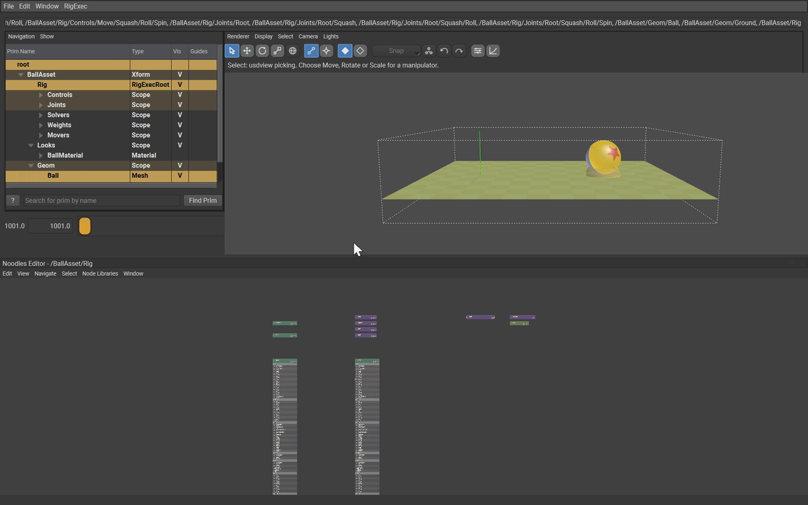
Select Move. Put the gizmo on Animation on the viewport toolbar and
the Avar Editor's own Write box on Animation (key at current
frame) — that is what makes an edit author a key at the current frame
instead of a default. Go to frame 1001, type 0 into the Avar Editor's
tx box and press Tab; go to 1049, type 8, Tab again. (Tab is
the commit key here: Return leaves the box showing the old number.)
double avars:tx.spline = {
1001: 0; pre (0, 0); post linear,
1049: 8; post linear,
}
Two keys on one channel, and the ball rolls eight units without slipping. Move them, retime them, add an ease — the roll follows, because it is not a channel.
Playback ¶
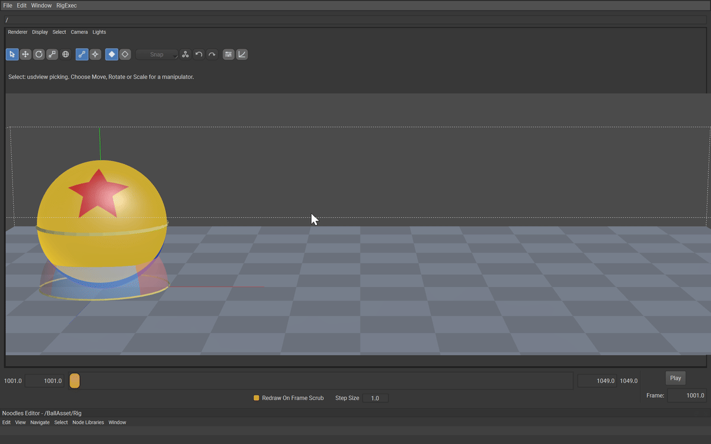
Drag usdview's frame slider from 1001 to 1049, or press Play. The rig evaluates live: no bake, no export. The star and the band are what tell you it is rolling — watch the contact point stay put under the ball as it crosses the ground.
What no editor can author ¶
Everything above happens with the pointer except five values, and the reason is worth knowing: usdNoodles has no attribute-value editor. It creates prims, renames them, applies API schemas, draws relationships and connections, and moves nodes — but nothing in it sets a value. usdview's own property panel is read-only, and the Layer Opinions panel (RigExec ▸ General Editors ▸ Layer Opinions) edits and deletes opinions that already exist rather than creating them.
The Avar Editor covers the avars and the viewport manipulators cover
poses and rest offsets, which is most of a rig. What is left here is
three uniform properties — and uniform is exactly the kind no
animation UI touches — plus the two rest:space matrices from Steps 5
and 6, because a matrix4d is not a number a spin box takes:
# /BallAsset/Rig/Solvers/BallChain
uniform token rigExec:controlSpace = "parentRelative"
# /BallAsset/Rig/Weights/BallWeight
uniform float rigExec:defaultWeight = 1
# /BallAsset/Rig/Movers/RollFromTravelX
uniform token rigExec:operation = "multiply"
# /BallAsset/Rig/Controls/Move/Squash/Roll and
# /BallAsset/Rig/Joints/Root/Squash/Roll
matrix4d rest:space = ( (1,0,0,0), (0,1,0,0), (0,0,1,0), (0,1,0,1) )
usdview does have somewhere to type them, and it is not a text editor: Window ▸ Interpreter. The recordings for Steps 7, 8 and 9 each open it, type three lines and close it again, so you can see exactly where the value goes:
from pxr import Sdf
p = usdviewApi.stage.GetPrimAtPath('/BallAsset/Rig/Solvers/BallChain')
p.CreateAttribute('rigExec:controlSpace', Sdf.ValueTypeNames.Token, False, Sdf.VariabilityUniform).Set('parentRelative')
The others are the same three lines with a different path, name, type and
value — Sdf.ValueTypeNames.Float and 1.0 for the weight's envelope,
Sdf.ValueTypeNames.Token and 'multiply' for the mover's operation,
and Sdf.ValueTypeNames.Matrix4d with
Gf.Matrix4d().SetTranslate(Gf.Vec3d(0, 1, 0)) (and
Sdf.VariabilityVarying rather than uniform) for the two rest:space
frames. Editing the .usda and reloading (File ▸ Reload All Layers)
does the same job, and docs/examples/tutorial_rolling_ball.usda already
has every one of them.
Where to go next ¶
- Baked and dynamic evaluation — the same rig, two ways to compute it.
- Two-Bone IK — the next solver up, and the one that makes a limb out of the chain you just built.
- Lattice Mover — squash and stretch as a deformation rather than a scale, for when scaling the whole ball is too blunt.
More concepts ¶
 How operators fire
How operators fireThe mental model and the evaluation order behind every UsdRig rig — who reads what, who writes what, and when.
- Baked and dynamic evaluation
The two ways UsdRig computes a frame, how to switch between them, and what each one is for.
- What warming does
The per-frame cache in one page: what warms, what you see, what it costs, and the switches.